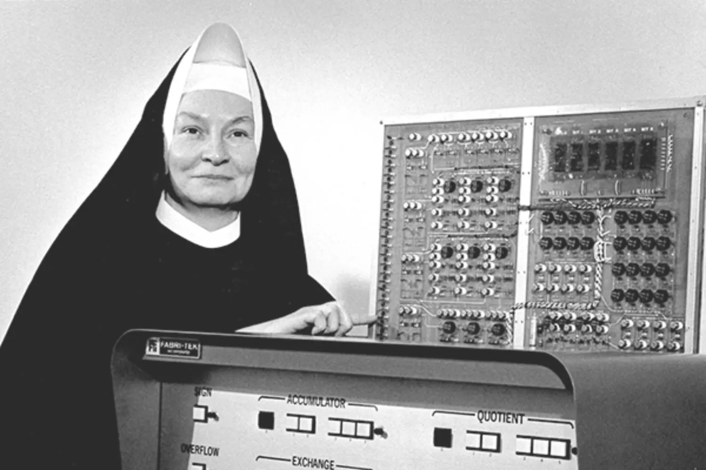
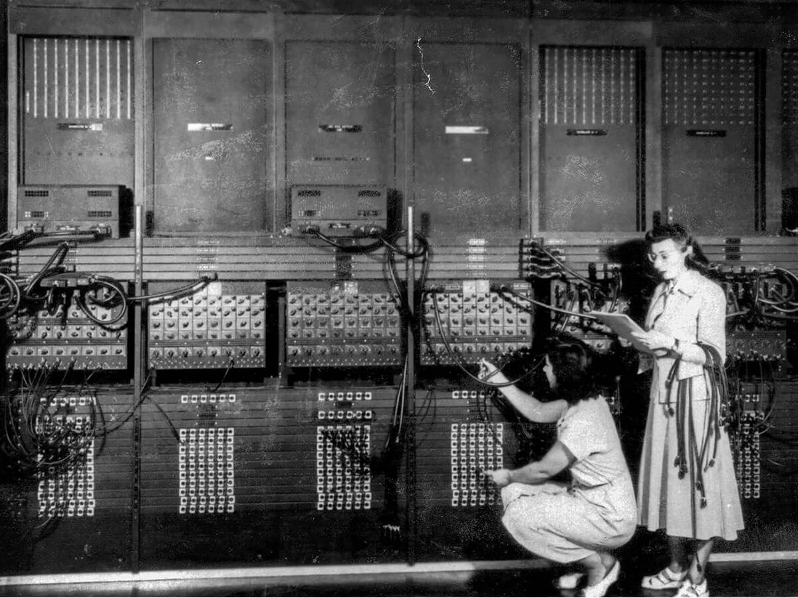

Irmã Mary Kenneth Keller, a primeira mulher com doutorado em programação
Mary Kenneth Keller, foi uma importante freira norte-americana e cientista da computação, em 7 de junho de 1965 se tornou a primeira doutora na area do país e passou a ser considerada a primeira mulher a receber um doutorado em ciência da computação. Keller ganhou a titulação na Universidade do Wiscinsin-Madison, e sua tese chama-se Inductive Inference on Computer Generated Patterns.
Conquistou o bacharelado em Ciências com ênfase em Matemática em 1943 e mestrado em Matemática e Física, em 1953, pela Universidade DePaul, uma universidade católica.Em 1958, Mary começou a trabalhar em uma oficina de ciência da computação, da Fundação Nacional de Ciência, dos Estados Unidos, no Dartmouth College, um local predominantemente masculino na época, onde participou do desenvolvimento da linguagem de programação BASIC. BASIC é um acrônimo para Beginner's All-purpose Symbolic Instruction Code; em português: Código de Instruções Simbólicas de Uso Geral para Principiantes.Keller acreditava no potencial dos computadores para aumentar o acesso à informação e para promover a educação de qualidade. Em 1965, após seu doutorado, ela fundou um departamento de ciências da computação na Universidade Clarke, em Iowa, onde foi diretora por 20 anos.
 Mary ainda militava pela inclusão e envolvimento de mulheres na computação e ajudou a fundar uma associação infantil para o uso de computadores na educação.
Inductive inference on computer generated patterns (Tese de Doutorado) (1965)
The Role of the University Computer Center in Educational Research (With Remote Hope) (Comunicação Curta) (1975)
Electrical circuits and Applications of matrix methods : analysis of linear circuits Mary K Keller; Consortium for Mathematics and Its Applications (Livro) (1978)
Computer graphics and applications of matrix methods : three dimensional computer graphics and projections (Livro) (1983)
Food service management and Applications of matrix methods : food service and dietary requirements (Livro) (1983)
Markov chains and applications of matrix methods : fixed point and absorbing Markov chains by Mary K Keller; Consortium for Mathematics and Its Applications (Livro) (1983).
✞ Data de falecimento: 10 de janeiro de 1985, aos 71 anos.
Entenda um pouco mais sobre Mary Kenneth Keller
Pesquisa feita por : Bianca Gomes Barbosa de Oliveira.
Turma D - IOS (Instituto da Oportunidade)❤